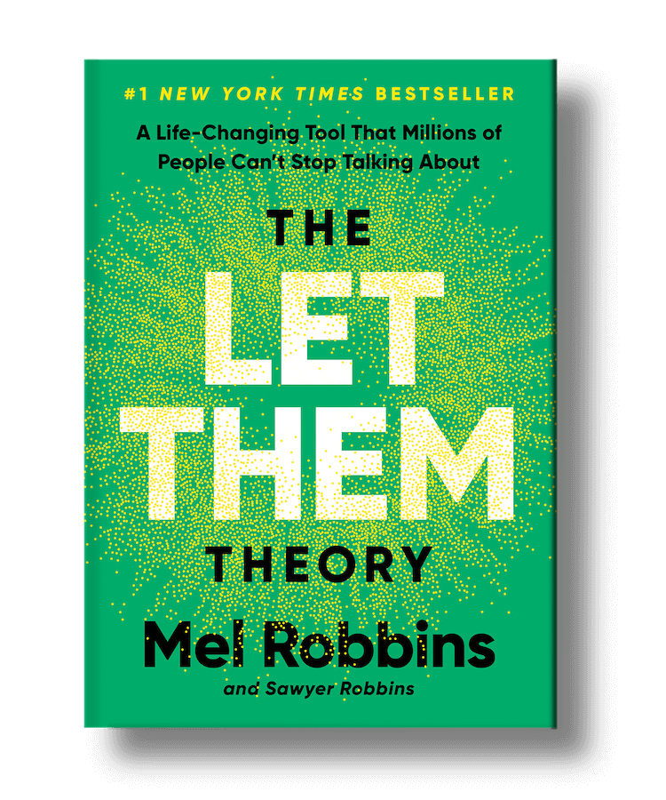
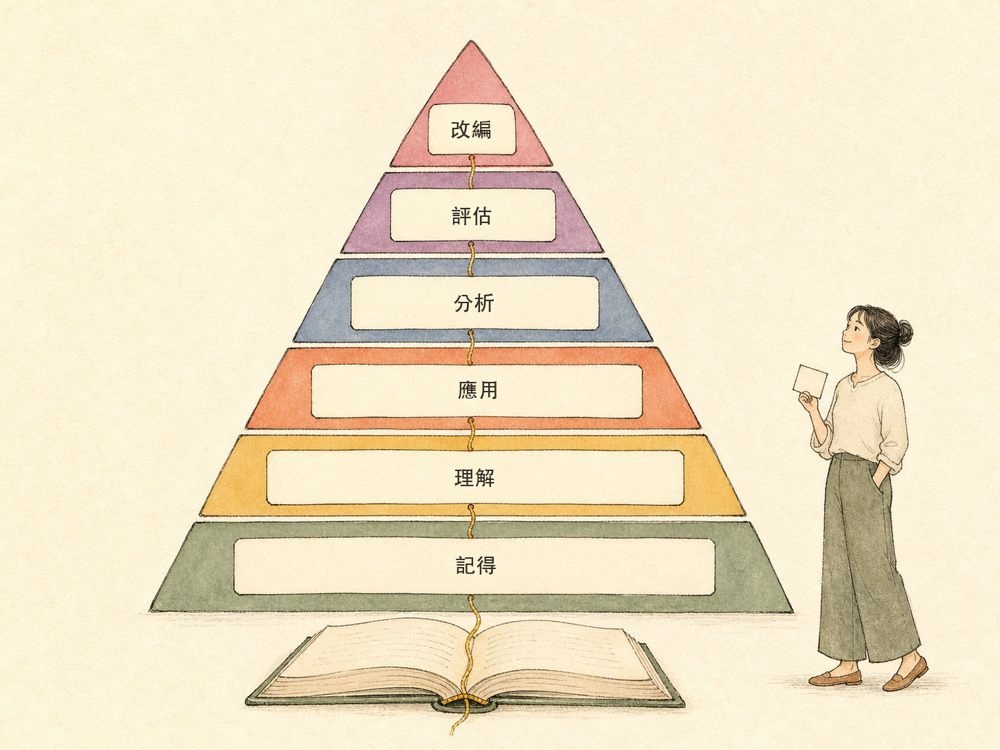
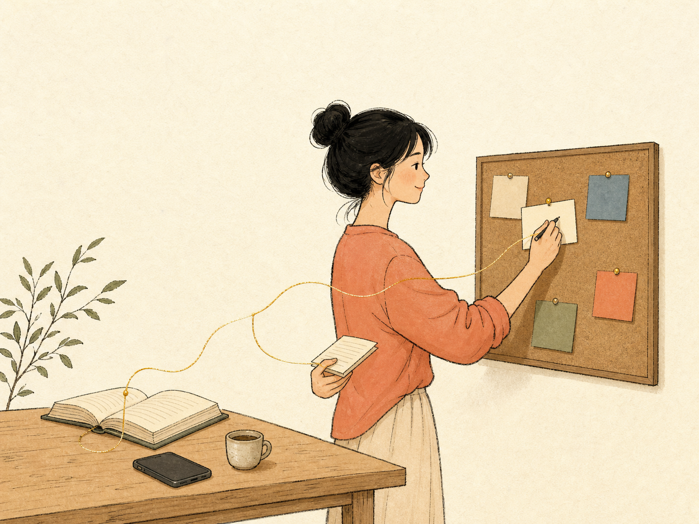

记不住细节，不等于没看见
原文小标题：（开头，无小标题）
作者从一个日常场景开头：你在过马路，一辆公交车靠站，一辆车停在斑马线前。你看见了车牌、车的颜色、路边的垃圾，还有树上的一只鸟。走到下一个路口，要你把刚才的画面全部说出来，大概说不出几样——可你不会因此怀疑自己有没有看见。
读完一本书、忘了一句划过线的话，人却常会想：我到底有没有学到？更常见的情况是，你明明记得那句话，等相似的情况出现，还是照原来的方式做。
记忆本来就会选择，大脑不会把一天存成一段完整的录像。
她把阅读目的分开：只是想看故事、满足好奇心，不需要逼自己把内容用出来；想用一本书解决问题，记得只完成了第一步。真正想知道的不只是记住多少，而是能不能用上读过的内容，自己判断、自己行动。
她也坦白自己的旧信念：以前相信只要知道得更多、记得更多，事情来时自然知道怎么做；可事情真的发生，她还是照原来的方式反应。（如果你常常读完当下懂、过几天想不起，她推荐先看另一篇《读过就忘》：用一次回想，找出自己漏掉的是哪一段。）
记忆奇人的反例：记得多，不等于看得懂
原文小标题：记得很多，也可能抓不到重点
1920 年代，莫斯科有位记者 Solomon Shereshevsky，开会从不记笔记，却能把会议内容完整复述一遍。神经心理学家 Alexander Luria 后来研究了他很多年。
数字和文字会在他脑中变成颜色、味道和画面。这些画面帮他记住大量细节，也让他很难抓住抽象概念和故事重点。
作者特意加了限定：这是一个历史个案，不能证明人可以拥有永久的照相式记忆。它只让我们看到一件事——
记得很多细节，也可能没有看懂内容。
平常，大脑会先注意和眼前目标有关的信息。过马路时，车有没有靠近比车牌是几号更重要；路边那些细节也许看见了，却没有被好好记下来。所以读一本书时，不用逼自己留下每一句，先挑一个现在真的用得上的想法，再往下走。
眼熟、说得出、会用，是三件事
原文小标题：想法要先和问题连起来
有些句子一看就眼熟，要你自己说，却只能说出个大概。作者区分了两种状态：
- 辨认：看着原文，觉得很熟。
- 回想：不看原文，也能说出大意。
但能把原句说出来，还不等于会用。你要先知道这句话在帮你处理什么问题，再看它和眼前的情况有没有关系。书里的一句话常常省掉很多条件：它不知道你面对谁、要处理什么，也不知道你能接受什么结果——这些条件要你自己放回去。
作者拿很红的《The Let Them Theory》来试：很多人都听过 Let Them，记得这句话，真的能帮她在内疚时设下界线吗？书里的两句话是：
- Let Them：别人的想法、情绪和选择，不是你能控制的。
- Let Me：把注意力带回自己身上——我能决定什么？我要怎么回应？
书里的话只能带你走到这里。接下来要怎么做，还要看眼前的情况。

书给方向，不替你选
原文小标题：用之前，先看眼前的情况
Let Them 给了一个方向。但使用之前，作者还要看清三件事：眼前发生了什么、自己需要什么，以及哪些选择还在自己手上。
一本书可以帮我看到新的选择，但不能替我选。
这一节很短，是承上启下：接下来她用一个假设的情境，演示一句话怎样落到一次具体的判断上。
约饭没回音：把一句话拆成一次判断
原文小标题：把想法带进真实情况
假设你约朋友周末吃饭，消息发出去两天，对方还没回。这时你想起 Let Them，也知道它在提醒你：有些事不由你决定。
先把眼前的情况拆开，免得把猜测当成事实：
- 已经发生的事：消息发出去两天，对方还没回。
- 脑中猜的事：对方是不是生气了，或者不想见面。
- 眼前需要处理的事：今晚要确认订座。
- 我能做的事：决定等多久，时间到了怎么安排。
再看这句话能帮到哪里：Let Them 能提醒你别急着猜，却不能替你安排时间。你决定不了对方何时回，但能决定等多久、到时怎么安排。于是可以再发一条消息：
我今晚六点前要确认订座。如果你还没回，我就先照自己的安排走。作者示范的消息
消息发出去之后，Let Them 才从书里的一句话，变成了一次判断和一个动作。
布鲁姆六层：做过一次，才知道哪里要改
原文小标题：做过一次，才知道哪里要改
即使做完了，你可能还是会忍不住打开聊天窗口，看对方回了没。作者指出：刚刚发生的，就是从记得、理解、分析、应用，到评估和改编的过程。布鲁姆分类法把这段路分成几种思考——名字不用背，它只是让你看见，一个想法要走进生活，中间还有几步。

对照回去：你先想起 Let Them，再说清它能帮你处理什么；接着把事实、猜测和需要分开，选了一个动作；事情过后再看结果，留下有用的部分，改掉不合用的部分。
作者也给这套顺序划了边界。生活不一定照顺序走，你不用全部背熟才开始分析或使用；拿去试的时候，你会再次想起意思，也会把问题说得更清楚。但如果要准确记住名字、数字或定义，还是要练习回想——分析和使用不能代替准确记忆，只是在生活需要时，可能让这个想法更容易回来。走过回想、说明、拆开、使用这一圈，想法连上了眼前的问题和过去的经验，下次遇到相似的事更容易想起。
做完之后还要评估：同一个做法放到不同的人和情况里，结果可能不一样，书只能给方向。要看的是——问题有没有解决？做法符不符合你在乎的事？结果能不能接受？作者说，对她来说信仰是判断的标准，她会问这个做法有没有违背自己在乎的事。
有用，不一定适合我。我也要问自己：我愿不愿意这样生活？
回头看时，可以看三件事：
- 我的安排有没有更清楚？
- 我有没有把重视的事说清楚？
- 下次我要留下哪一部分，改哪一部分？
这就是评估：有用的部分留下，不合用的部分再改。
一次拒绝不是改变，但它是证据
原文小标题：一次不同的选择，会留下新证据
你不只做了一件不同的事，也得到了新的证据。作者以前以为自己还缺一个答案；现在她看见，事情来时可以先停一下，看清楚，再决定下一步。一次选择还不能改变她怎么看自己，但会留下一个证据：她不一定要照原来的方式做。
她的界线问题常出现在这种时候：对方心情不好，约她出去。她其实不想去，也没有力气陪伴，可一想到要拒绝就开始内疚。以前她会勉强答应，只想让内疚和焦虑快点消失；可出去之后，她既没多少精力照顾对方，也没力气照顾自己。
现在她可以这样说：
我知道你今天很难受，但我今晚需要休息。我们明天再聊。
对方也许会失望，她可能还是会内疚。但那天晚上，她可以留在家里休息，不必再为了让内疚快点消失而勉强出门。这一次拒绝还不能证明她已经很会设界线，它只留下一个新的证据：可以感到内疚，也可以保护自己的精力。
改编：把书里的话改成下次会用的版本
原文小标题：最后，留下自己的版本
Let Them 和 Let Me 是书里的说法。作者把它改成了自己下次能用的版本：
让对方选择要不要回。我回到自己在乎的事，决定要等多久，也决定时间到了要怎么安排。
布鲁姆分类法把这一步叫“创造”；用在阅读上，作者更愿意叫它“改编”。书里的句子很短，能用在很多地方；改成自己的版本时，要加上自己的情况和下一步，下次再遇到，才知道怎么用。

下次读完一本书：六步清单与三件事
原文小标题：下次读完一本书，你可以这样做
读到一句想留下的话，先把书放到一边。等生活真的出现相似的情况，再把它拿回来：
- 记得：把书收起来，说出这句话的大意。
- 理解：说出它现在能帮你处理哪一个问题。
- 分析：分开已经发生的事、脑中猜的事，以及你真正需要处理的事。
- 应用：选一个别人看得到的动作。
- 评估：事情过后，看这个做法有没有让情况更清楚，有没有符合你在乎的事。
- 改编：把书里的话，改成下一次你真的会用的版本。
多做几次，你会知道哪些想法有用、适合放在哪里，也能写出适合自己的做法。作者建议把三件事分开看：
- 想法：书里的想法是一个起点，不会替你下命令。
- 一次行动：只是一场小小的试验，不能立刻证明你是什么样的人。
- 重复选择：一次次选择，会慢慢留下新的证据。
车牌可以忘掉。一本书的大半内容也可以忘掉。
要留下的是：下一次生活需要时，你能想起一个有用的想法，把它变成自己的下一步。每次拿一个想法去试、做完再回头看，都是在练习判断、行动，也是在从生活里学习。
评论区摘录
直接定为九月要读的书～上个月整理读书心得也遇到类似情况：记了书摘，却没法把内容整合起来，后来是从最开始的需求重新思考。
读书可以当作跟陌生人聊天：我能接收到一些信息，但当然记不住全部对话。如果有兴趣，那就再约（读）一次。（作者回复：这个形容好生动，也很贴切。）